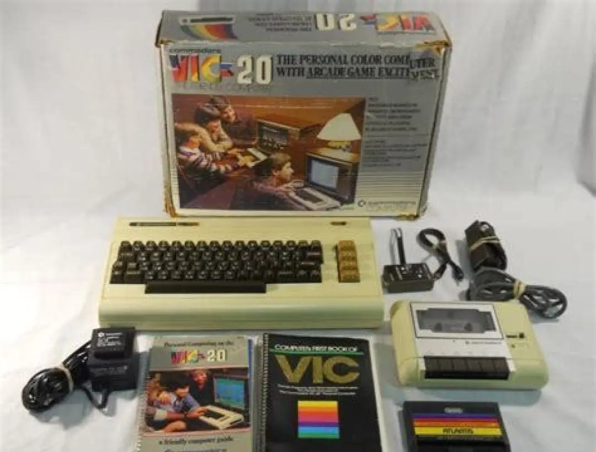

Commodore 64

1982 年上市的 Commodore 64，以 64KB 内存、VIC-II 图形芯片与传奇的 SID 三声道音源横扫家用市场，累计销量约一千数百万台，是 8 位机黄金年代的代表作。海量游戏与演示文化让它至今仍是复古计算圈最活跃的平台之一。
客观评测
Commodore 64 于 1982 年 8 月上市，搭载 MOS 6510（约 1.02MHz），配 64KB 内存、VIC-II 图形芯片（320×200、16 色）与 SID 6581 三声道音源，内置 BASIC 2.0，支持磁带与 1541 软驱。全生命周期销量约 1250 万–1700 万台，生产延续至 1994 年，是 8 位机时代最畅销、生态最繁荣的家用电脑之一。
主观点评
C64 是一代人的第一台「自己的电脑」。接上电视、插上手柄，SID 芯片流淌出的音乐是芯片音的原点；哪怕 1541 软驱慢得让人抓狂，加载条爬满屏幕的等待也成了集体回忆。今天淘一台面包机版 C64，配上 1541 和一张实体卡带，开机那声「READY.」比任何怀旧滤镜都真实。它的零件好找、社区庞大、Demo 文化活蹦乱跳，是复古计算收藏里性价比最高、也最容易玩起来的平台。
优点与不足
- SID 音源音色温暖，至今被音乐人采样使用，是芯片音乐的圣杯
- 64KB 大内存加 VIC-II 硬件精灵，游戏表现力在 8 位机中出类拔萃
- 价格一降再降，让家用电脑真正走入普通家庭
- 1541 软驱速度极慢且故障率高，是几代人的集体记忆痛点
- BASIC 2.0 功能简陋，几乎没有内置图形命令
- 初期面包机外壳厚重，电源适配器发热明显
参数规格
| 上市时间 | 1982 年 8 月上市 |
|---|---|
| 处理器 | MOS 6510（6502 内核） |
| 主频 | 约 1.02MHz（NTSC 版），PAL 版约 0.985MHz |
| 内存 | 64KB RAM + 20KB ROM |
| 图形芯片 | MOS VIC-II |
| 分辨率 | 320×200 文本/图形模式，最高 16 色 |
| 声音 | MOS SID 6581，3 声道可编程波形+噪声 |
| 存储 | 盒式磁带 Datasette，选配 1541 5.25 英寸软驱（170KB） |
| 手柄接口 | 2 个 9 针 D 型手柄接口 |
| 其他接口 | 卡带插槽、用户扩展口、串行 IEC 总线、RF 射频输出 |
| 视频输出 | RF 射频接电视，后期可改复合视频 |
| 键盘 | 一体式全尺寸键盘（66 键） |
| 操作系统 | Commodore BASIC 2.0 内置于 ROM，KERNAL 内核 |
| 机身材质 | 米色 ABS 塑料（俗称「面包机」外壳） |
| 尺寸 | 约 40.4×21.6×7.5 厘米 |
| 重量 | 约 1.8 千克 |